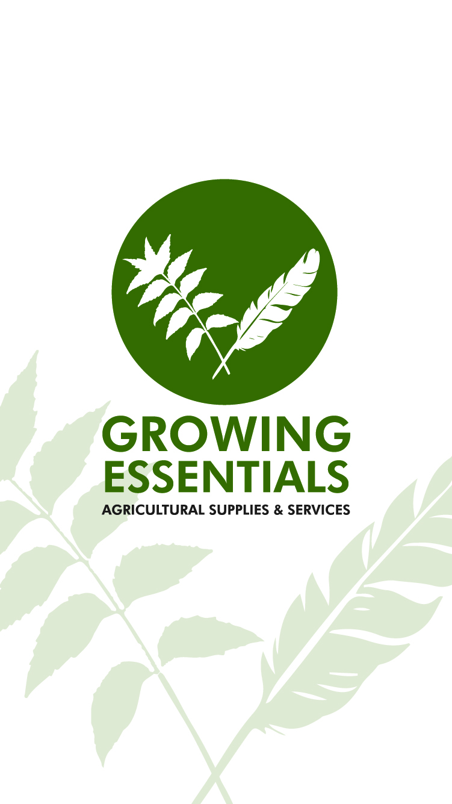

Climate‑Smart Agricultural Solutions
Today, agriculture produces nearly one‑third of global greenhouse gas emissions, while over 670 million people still face hunger.
My name is Dharnel Duprey, founder of Growing Essentials. We build climate‑smart agricultural solutions that help communities grow more food sustainably while creating economic opportunities.
We don’t just install systems. We educate and empower individuals to turn agriculture into long‑term income‑generating opportunities.
We must produce more food without harming the planet. Our goal is to build a future where agriculture is productive, sustainable, and resilient for people and the environment.